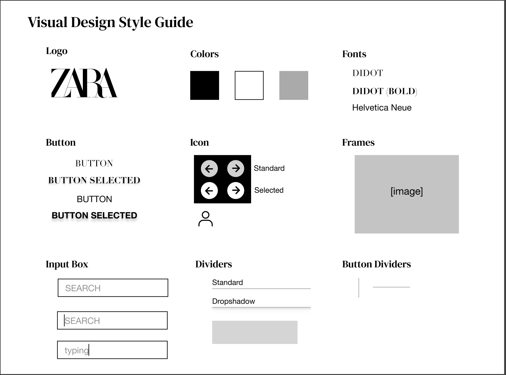

Zara Website Redesign
Visit my redesigned page!
01 - Identifying Usability Problems
Picking a webpage for redesign

Zara is the first website that came to mind when thinking about a website with accessibility issues.
Numerous word-of-mouth encounters and personal experiences as a user of this website has
made me aware of the common consensus that this website is difficult to navigate.
Figure 1: Home page
Figure 2: Home page, navigation menu
Figure 3: Scrolling on product page
Notes: On first glance, the Zara website is admittedly “aesthetically pleasing”, in the sense that it seemingly
resembles an editorial fashion magazine. However, in the digital website format, this design choice
results in an poorly organized website and un-intuitive customer experience. As visible in the above
screenshots, this begins with the home page, which does a poor job of emphasizing the site elements users
should be interacting with - the table below describes several issues pertaining to the usability of Zara’s website:
Finding Problems
| Criteria | Issues |
|---|---|
| Usability |
|
| Learnability |
|
| Memorability |
|
02 - Visual Redesign
Speed Sketching
Final Sketch
[Iteration 1] Low-Fidelity Wireframing + Redesign Annotations
[Revised] Low-Fidelity Wireframing + Redesign Annotations

High-Fidelity Prototype
Link to Figma
Style Guide

Conclusion
Overall, as can be seen above, the process of redesign highlighted the dynamic
nature of the design process. From my brainstorming stage (sketches) to my final
prototype, there is an evident change in certain design choices and the reasoning
behind these changes. These changes were the result of observing the interfaces of
other websites, and developing an understanding of the difference between accessibility
and pure "aesthetic" in website design. It was very interesting trying to brainstorm
how to bring accessibility to the Zara website while maintaining Zara's brand, which
is one of the crucial factors to its business model. I really enjoyed this process, and
am now noticing patterns and design choices that I interact with on a daily basis!